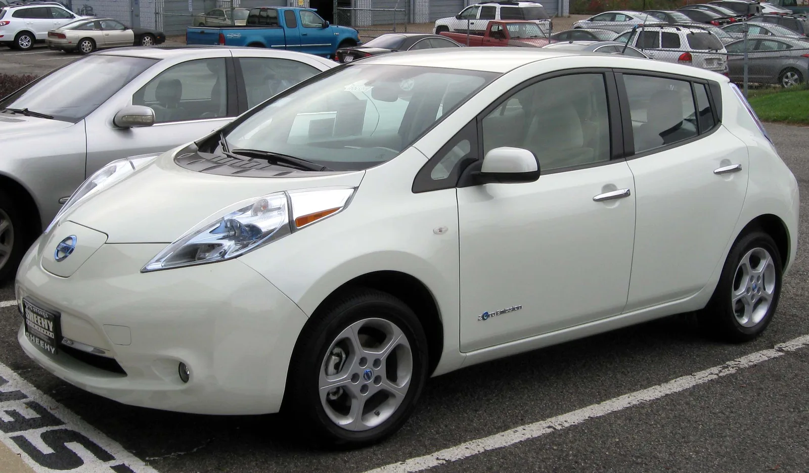
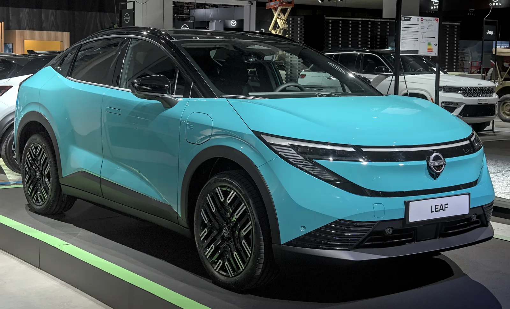
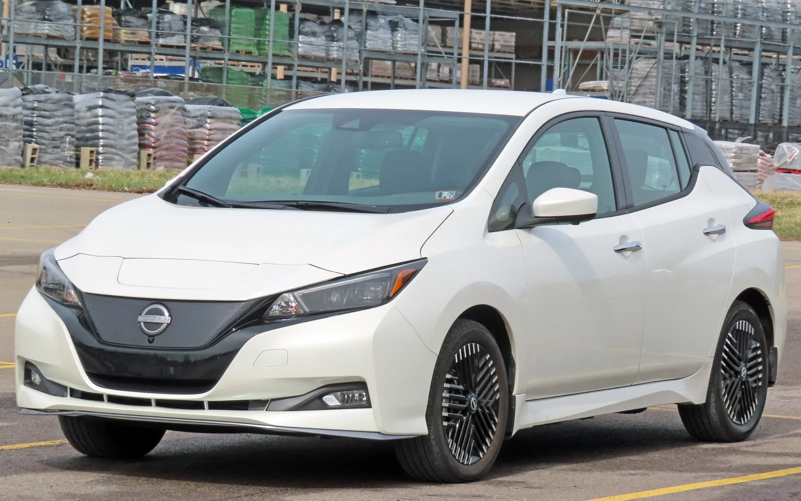
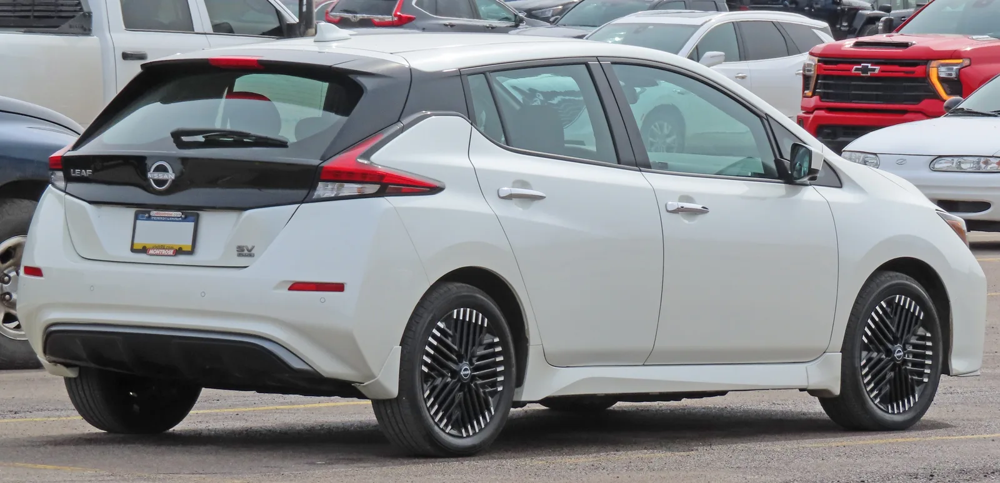
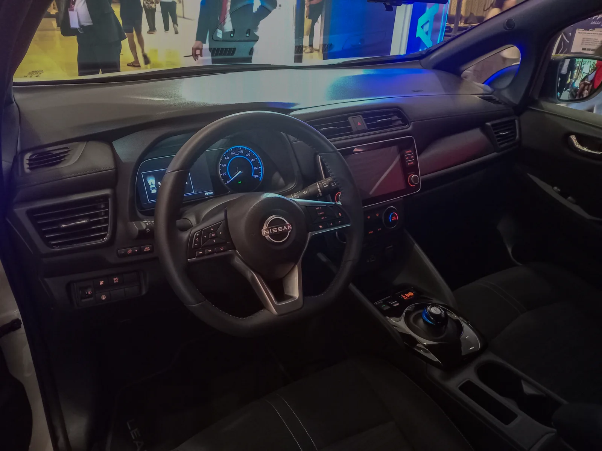

▲ 3세대로 거듭난 닛산 리프. 해치백에서 쿠페형 크로스오버로 완전히 달라졌다 ⓒ Wikimedia Commons
먼저 밝혀둘 사실이 있다. 닛산 리프는 현재 국내에서 판매되지 않는다. 2014년 12월 국내에 정식 출시됐지만, 2020년 닛산이 한국 시장 철수를 선언하면서 판매가 그대로 종료됐다. 이후 6년이 지난 지금도 공식 재출시 계획은 발표되지 않았다. 다만 최근 3세대 리프가 글로벌 시장에서 완전히 새로운 모습으로 돌아오면서, 한국닛산 재진출설이 자동차 커뮤니티를 중심으로 돌고 있는 것도 사실이다. 이 리뷰는 국내에 없는 차라는 전제 위에서, 리프가 전기차 역사에서 갖는 의미와 3세대의 해외 평가를 정리한다.
1. 왜 한국에는 리프가 없나

▲ 2011년형 1세대 닛산 리프. 국내에는 이 차의 페이스리프트 격인 2세대가 2014년 처음 상륙했다 ⓒ Wikimedia Commons
리프는 2014년 12월 23일 국내에 정식 출시됐다. 하지만 판매는 오래가지 못했다. 2020년 4월 이후 재고 소진을 이유로 판매가 일시 중단됐고, 이 시점을 전후해 닛산이 한국 시장 철수 결정을 내리면서 그대로 판매가 종료됐다. 노 재팬 불매 운동의 여파와 한국닛산의 지속된 적자가 철수 결정의 주요 배경으로 꼽힌다. 이후 6년째 닛산은 한국에 승용 라인업을 공급하지 않고 있다. 최근 3세대 리프가 우핸들 시장을 포함해 영국 공장에서 2026년부터 생산되기 시작하면서, "닛산이 리프와 함께 한국에 다시 들어오는 것 아니냐"는 추측성 보도와 커뮤니티 소문이 돌고 있지만, 이는 어디까지나 소문 단계이며 닛산 본사나 한국닛산의 공식 발표는 아직 없다.
참고 — 국내 출시 전례
2014년 국내 출시 당시 리프는 24kWh 배터리로 공인 주행거리 132km에 불과했다. 이후 2019년 2세대(ZE1) 전환 시점에는 국내 판매가 이미 중단된 상태였기 때문에, 40kWh 이상 배터리를 얹은 2세대 리프는 국내에 정식 판매된 적이 없다.
2. 역사적 의의 — 세계 최초의 '대중' 양산 전기차
리프는 2009년 8월 공개돼 2010년 12월 양산을 시작했다. 테슬라 로드스터가 앞서 있었지만, 로드스터는 소규모 스포츠카였던 반면 리프는 대량 생산 체제를 갖춘 최초의 대중형 순수 전기차였다는 점에서 역사적 의미가 다르다. 2019년 5월에는 세계 최초로 누적 판매 40만 대를 돌파했고, 2020년에는 생산 10년 만에 누적 생산 50만 대를 넘어섰다. 리프가 다진 CHAdeMO 급속충전 규격과 대중형 EV 시장의 기초는, 이후 등장한 대부분의 양산 전기차가 참고한 출발점이 됐다.
3. 3세대(2026년형) — 해치백을 버리고 크로스오버로

▲ 2025년 취리히 모터쇼에 전시된 3세대 리프. 해치백이 아닌 쿠페형 크로스오버 실루엣이 뚜렷하다 ⓒ Wikimedia Commons

▲ 2세대(ZE1) 리프. 2025년까지 5도어 해치백 형태를 유지했던 마지막 세대다 ⓒ Wikimedia Commons

▲ 2세대 리프 후면. 3세대부터는 이 해치백 형태 자체가 사라진다 ⓒ Wikimedia Commons
2025년까지 리프는 5도어 해치백 형태를 유지했다. 그러나 3세대부터는 완전히 다른 차가 됐다. 낮고 매끈한 쿠페형 크로스오버 SUV로 차체 형태 자체가 바뀌었고, CCS 완속·NACS(테슬라 규격) 급속을 모두 지원하는 듀얼 충전구를 갖췄다. 배터리는 스탠다드(52kWh, 미국 EPA 기준 약 434km)와 익스텐디드 레인지(75kWh, 약 488km) 2종으로 구성되며, 출력은 최대 214마력(261lb-ft 토크)까지 올라갔다. 실내에는 14.3인치 듀얼 디스플레이와 구글 기반 인포테인먼트가 탑재됐고, 18인치 알로이 휠, 어댑티브 크루즈 컨트롤, 무선 안드로이드 오토·카플레이, 2존 공조 등이 기본 사양으로 들어간다. 미국 기준 시작 가격은 3만 달러를 밑돈다.
| 트림 | 배터리 | EPA 주행거리(추정) | 충전구 |
|---|---|---|---|
| 스탠다드 | 52kWh | 약 434km(270마일) | CCS + NACS |
| 익스텐디드 레인지 | 75kWh | 약 488km(303마일) | CCS + NACS |
4. 해외 평가 — "실험적인 파격을 벗고 주류에 정착했다"

▲ 리프 실내. 3세대는 14.3인치 듀얼 디스플레이와 구글 기반 인포테인먼트로 완전히 새로워졌다 ⓒ Wikimedia Commons
해외 매체들의 3세대 리프 평가는 대체로 우호적이다. 모터원(Motor1)은 "3세대는 기본적인 이동수단의 개념을 재정의한다"고 평가했고, 다수 매체는 "한때 실험적이고 다소 어색한 전기차 개척자였던 리프가, 이번 세대에서는 전기차 주류의 중심부에 안착했다"는 취지로 호평했다. 특히 가격 대비 상품성 — 3만 달러를 밑도는 시작 가격에 300마일에 육박하는 주행거리, 테슬라 슈퍼차저 호환 충전구까지 갖춘 구성 — 이 예산 제약이 있는 소비자층에게 설득력 있는 선택지로 꼽힌다.
5. 정리 — 국내에는 없지만, 의미는 크다
닛산 리프는 국내 소비자가 지금 당장 살 수 있는 차는 아니다. 2020년 한국 시장 철수 이후 6년째 공백이 이어지고 있고, 재진출은 확정된 사실이 아니라 소문 수준에 머물러 있다. 그러나 세계 최초의 대중형 양산 전기차라는 역사적 위치, 그리고 3세대에서 보여준 크로스오버 전환과 상품성 개선은 전기차 시장 전체를 이해하는 데 여전히 중요한 참고점이다. 한국닛산이 실제로 재진출을 결정한다면, 그 첫 신호탄은 십중팔구 이 3세대 리프가 될 가능성이 높다.
체크포인트
- 닛산 리프는 2020년 이후 국내 미판매 상태이며, 재진출은 아직 소문 단계다.
- 2010년 양산을 시작한 세계 최초의 대중형 양산 전기차로, 2019년 세계 최초 40만 대 판매를 돌파했다.
- 3세대(2026년형)는 해치백에서 쿠페형 크로스오버로 완전히 바뀌었다.
- 배터리는 52kWh(약 434km)·75kWh(약 488km) 2종, 미국 기준 시작가는 3만 달러 미만이다.
- 해외 평가는 "실험적 개척자에서 전기차 주류로 정착했다"는 평가로 수렴한다.